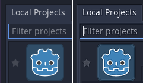

Troubleshooting
This page lists common issues encountered when using Godot and possible solutions.
See also
See Using the Web editor for caveats specific to the Web version of the Godot editor.
The editor runs slowly and uses all my CPU and GPU resources, making my computer noisy
This is a known issue, especially on macOS since most Macs have Retina displays. Due to Retina displays' higher pixel density, everything has to be rendered at a higher resolution. This increases the load on the GPU and decreases perceived performance.
There are several ways to improve performance and battery life:
In 3D, click the Perspective button in the top left corner and enable Half Resolution. The 3D viewport will now be rendered at half resolution, which can be up to 4 times faster.
Open the Editor Settings and increase the value of Low Processor Mode Sleep (µsec) to
33000(30 FPS). This value determines the amount of microseconds between frames to render. Higher values will make the editor feel less reactive, but will help decrease CPU and GPU usage significantly.If you have a node that causes the editor to redraw continuously (such as particles), hide it and show it using a script in the
_ready()method. This way, it will be hidden in the editor, but will still be visible in the running project.
The editor stutters and flickers on my variable refresh rate monitor (G-Sync/FreeSync)
This is a known issue. Variable refresh rate monitors need to adjust their gamma curves continuously to emit a consistent amount of light over time. This can cause flicker to appear in dark areas of the image when the refresh rate varies a lot, which occurs as the Godot editor only redraws when necessary.
There are several workarounds for this:
Enable Interface > Editor > Update Continuously in the Editor Settings. Keep in mind this will increase power usage and heat/noise emissions since the editor will now be rendering constantly, even if nothing has changed on screen. To alleviate this, you can increase Low Processor Mode Sleep (µsec) to
33000(30 FPS) in the Editor Settings. This value determines the amount of microseconds between frames to render. Higher values will make the editor feel less reactive, but will help decrease CPU and GPU usage significantly.Alternatively, disable variable refresh rate on your monitor or in the graphics driver.
VRR flicker can be reduced on some displays using the VRR Control or Fine Tune Dark Areas options in your monitor's OSD. These options may increase input lag or result in crushed blacks.
If using an OLED display, use the Black (OLED) editor theme preset in the Editor Settings. This hides VRR flicker thanks to OLED's perfect black levels.
The editor or project takes a very long time to start
When using one of the RenderingDevice-based renderers (Forward+ or Mobile), the first startup is expected to be relatively long. This is because shaders need to be compiled before they can be cached. Shaders also need to be cached again after updating Godot, after updating graphics drivers or after switching graphics cards.
If the issue persists after the first startup, this is a known bug on Windows when you have specific USB peripherals connected. In particular, Corsair's iCUE software seems to cause this bug. Try updating your USB peripherals' drivers to their latest version. If the bug persists, you need to disconnect the specific peripheral before opening the editor. You can then connect the peripheral again.
Firewall software such as Portmaster may also cause the debug port to be
blocked. This causes the project to take a long time to start, while being
unable to use debugging features in the editor (such as viewing print()
output). You can work this around by changing the debug port used by the project
in the Editor Settings (Network > Debug > Remote Port). The default is
6007; try another value that is greater than 1024, such as 7007.
On Windows, when loading the project for the first time after the PC is turned on, Windows Defender will cause the filesystem cache validation on project startup to take significantly longer. This is especially noticeable in projects with a large number of files. Consinder adding the project folder to the list of exclusions by going to Virus & threat protection > Virus & threat protection settings > Add or remove exclusions.
The Godot editor appears frozen after clicking the system console
When running Godot on Windows with the system console enabled, you can accidentally enable selection mode by clicking inside the command window. This Windows-specific behavior pauses the application to let you select text inside the system console. Godot cannot override this system-specific behavior.
To solve this, select the system console window and press Enter to leave selection mode.
The Godot editor's macOS dock icon gets duplicated every time it is manually moved
If you open the Godot editor and manually change the position of the dock icon, then restart the editor, you will get a duplicate dock icon all the way to the right of the dock.
This is due to a design limitation of the macOS dock. The only known way to resolve this would be to merge the project manager and editor into a single process, which means the project manager would no longer spawn a separate process when starting the editor. While using a single process instance would bring several benefits, it isn't planned to be done in the near future due to the complexity of the task.
To avoid this issue, keep the Godot editor's dock icon at its default location as created by macOS.
Some text such as "NO DC" appears in the top-left corner of the Project Manager and editor window
This is caused by the NVIDIA graphics driver injecting an overlay to display information.
To disable this overlay on Windows, restore your graphics driver settings to the default values in the NVIDIA Control Panel.
To disable this overlay on Linux, open nvidia-settings, go to X Screen 0 >
OpenGL Settings then uncheck Enable Graphics API Visual Indicator.
A microphone or "refresh" icon appears in the bottom-right corner of the Project Manager and editor window
This is caused by the NVIDIA graphics driver injecting an overlay to display instant replay information on ShadowPlay recording. This overlay can only be seen on Windows, as Linux does not have support for ShadowPlay.
To disable this overlay, press Alt + Z (default shortcut for the NVIDIA overlay) and disable Settings > HUD Layout > Status Indicator in the NVIDIA overlay.
Alternatively, you can install the new NVIDIA app <https://www.nvidia.com/en-us/software/nvidia-app/> which replaces GeForce Experience and does not suffer from this issue. Unlike GeForce Experience, the NVIDIA app draws the replay indicator in the corner of the screen as opposed to the corner of each window.
The editor or project appears overly sharp or blurry

Correct appearance (left), oversharpened appearance due to graphics driver sharpening (right)
If the editor or project appears overly sharp, this is likely due to image sharpening being forced on all Vulkan or OpenGL applications by your graphics driver. You can disable this behavior in the graphics driver's control panel:
NVIDIA (Windows): Open the start menu and choose NVIDIA Control Panel. Open the Manage 3D settings tab on the left. In the list in the middle, scroll to Image Sharpening and set it to Sharpening Off.
AMD (Windows): Open the start menu and choose AMD Software. Click the settings "cog" icon in the top-right corner. Go to the Graphics tab then disable Radeon Image Sharpening.
If the editor or project appears overly blurry, this is likely due to FXAA being forced on all Vulkan or OpenGL applications by your graphics driver.
NVIDIA (Windows): Open the start menu and choose NVIDIA Control Panel. Open the Manage 3D settings tab on the left. In the list in the middle, scroll to Fast Approximate Antialiasing and set it to Application Controlled.
NVIDIA (Linux): Open the applications menu and choose NVIDIA X Server Settings. Select to Antialiasing Settings on the left, then uncheck Enable FXAA.
AMD (Windows): Open the start menu and choose AMD Software. Click the settings "cog" icon in the top-right corner. Go to the Graphics tab, scroll to the bottom and click Advanced to unfold its settings. Disable Morphological Antialiasing.
Third-party vendor-independent utilities such as vkBasalt may also force sharpening or FXAA on all Vulkan applications. You may want to check their configuration as well.
After changing options in the graphics driver or third-party utilities, restart Godot to make the changes effective.
If you still wish to force sharpening or FXAA on other applications, it's recommended to do so on a per-application basis using the application profiles system provided by graphics drivers' control panels.
The editor/project freezes or displays glitched visuals after resuming the PC from suspend
This is a known issue on Linux with NVIDIA graphics when using the proprietary driver. There is no definitive fix yet, as suspend on Linux + NVIDIA is often buggy when OpenGL or Vulkan is involved. The Compatibility rendering method (which uses OpenGL) is generally less prone to suspend-related issues compared to the Forward+ and Mobile renderers (which use Vulkan).
The NVIDIA driver offers an experimental option to preserve video memory after suspend which may resolve this issue. This option has been reported to work better with more recent NVIDIA driver versions.
To avoid losing work, save scenes in the editor before putting the PC to sleep.
The project works when run from the editor, but fails to load some files when running from an exported copy
This is usually caused by forgetting to specify a filter for non-resource files
in the Export dialog. By default, Godot will only include actual resources
into the PCK file. Some files commonly used, such as JSON files, are not
considered resources. For example, if you load test.json in the exported
project, you need to specify *.json in the non-resource export filter. See
Resource options for more information.
Also, note that files and folders whose names begin with a period will never be
included in the exported project. This is done to prevent version control
folders like .git from being included in the exported PCK file.
On Windows, this can also be due to case sensitivity issues. If you reference a resource in your script with a different case than on the filesystem, loading will fail once you export the project. This is because the virtual PCK filesystem is case-sensitive, while Windows's filesystem is case-insensitive by default.
The project crashes frequently or instantly after opening it from the project manager
This could be caused by a number of things such as an editor plugin, GDExtension addon, or something else. In this scenario it's recommended that you open the project in recovery mode, and attempt to find and fix whatever is causing the crashes. See the Project Manager page for more information.